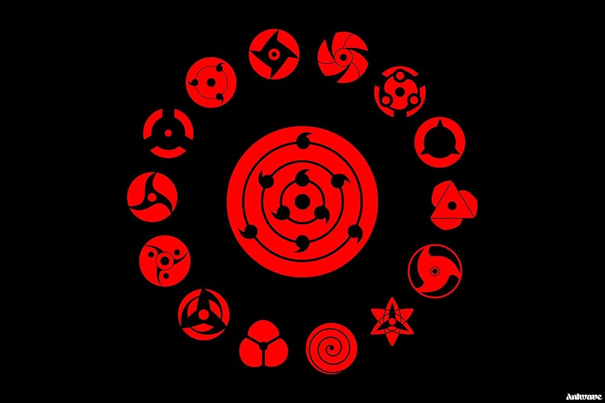

About Me
My name is Joel. I was born in Nigeria and unfortunately still there live with my family. I am currently unemployed . Anime is my world, and I really love watching Anime. I love to read self development books and learn new things.
Lagos, Nigeria
Nigeria is the most populous country in Africa, located in West Africa along the Gulf of Guinea. It is known for its rich cultural diversity, with over 250 ethnic groups and more than 500 languages spoken. The country is home to a variety of unique wildlife, including the rare Cross River gorilla and the West African lion. Nigeria is famous for its vibrant music and film industry (Nollywood), as well as its iconic landmarks like Zuma Rock and the Niger River. It is also a major producer of oil, cocoa, and palm oil.